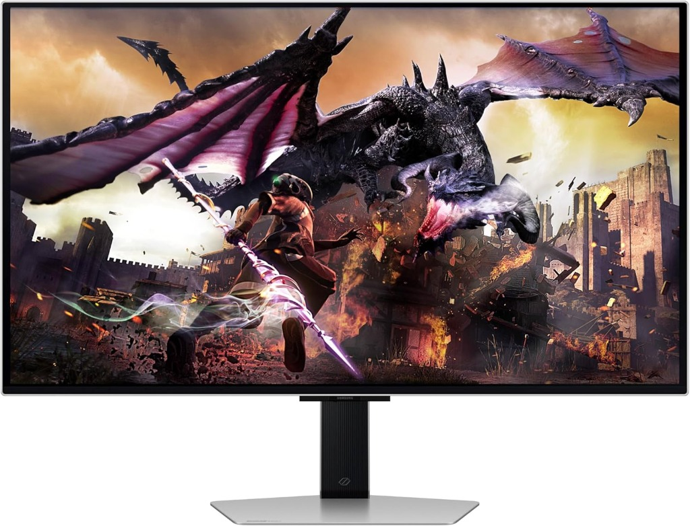
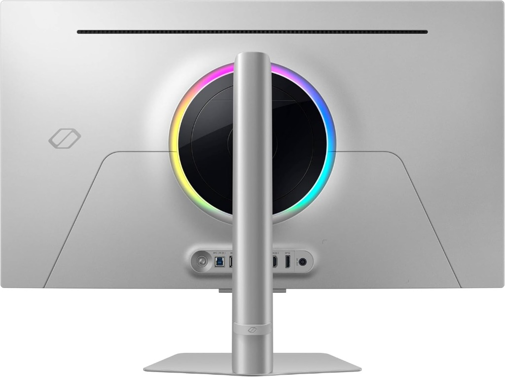

Samsung Odyssey G8 Review (2026): OLED Performance & Practicality

The Samsung Odyssey G8 represents a deliberate evolution in high-performance desktop displays, blending vibrant self-lit OLED technology with a minimalist aesthetic. This immersive panel consistently delivers infinite contrast and instantaneous pixel response required by discerning users. Our analysis evaluates its luminance scaling parameters, latency characteristics during rapid rendering, and its overarching suitability for a workstation setup. Positioned against QD-OLED ultrawides such as the Alienware AW3423DWF and MSI’s high-refresh OLED variants, the Odyssey G8 distinguishes itself through Samsung’s industrial design and smart features. For a direct head-to-head breakdown, see our Odyssey G8 vs Alienware comparison . Rather than pursuing raw numerical supremacy, this model strikes an impressive balance between technical excellence and daily operational reliability, making it a compelling option for gamers and creative professionals.
TL;DR Verdict
- Panel: QD-OLED (Samsung)
- Resolution: 3440×1440 (21:9)
- Refresh Rate: 175Hz with 0.03ms Response
- Best For: Immersive gaming & sophisticated workspaces
- Verdict: Competitive within the premium OLED tier, distinguishing itself with sleek design and smart integrations.
Compare with the Alienware AW3423DWF →
Who Should Buy
- Users wanting premium industrial design
- Those who value smart features and minimal bezel
- Immersive gamers wanting OLED motion clarity
Who Should Skip
- Users with multi-device KVM needs
- Those who rely on USB-C hub power delivery only
- Users in extremely bright environments
- Users seeking maximum QD-OLED color accuracy ( AW3423DWF )
1. Product Overview
The Samsung Odyssey G8 operates at the intersection of lifestyle elegance and performance hardware. Featuring a strikingly thin metallic frame and a subdued base, it sidesteps aggressive aesthetic paradigms common to gaming equipment. This refined design conceals a highly capable architecture driven by a self-illuminating display panel.
By integrating Samsung's proprietary Smart TV operating system, the G8 provides autonomous streaming media and cloud gaming access. This comprehensive software layer allows the display to act as a standalone entertainment hub, maintaining utility even when the host PC is powered down.
2. Technical Specifications
| Panel Type | QD-OLED |
|---|---|
| Size | 34-inch |
| Resolution | 3440 × 1440 |
| Aspect Ratio | 21:9 Ultrawide |
| Refresh Rate | 175Hz |
| Response Time | 0.03ms (GtG) |
| VRR Support | AMD FreeSync Premium Pro |
| HDR Certification | DisplayHDR True Black 400 |
| Peak Brightness (HDR) | ~1,000 Nits (Small Window) |
| Ports | Micro HDMI 2.1, Mini DisplayPort, USB-C (65W PD) |
| Warranty | 3-Year Limited (Covers Burn-in) |
3. Brightness & HDR Performance
The Samsung Odyssey G8 handles luminance with a measured approach compared to high-output Mini-LED counterparts, focusing on pixel-level contrast execution over searing full-screen brightness. Peak HDR brightness reaches approximately 1,000 nits restricted to small window sizes (maintaining 2% to 3% window coverage) during intense cinematic highlights like specular explosions or localized light sources. Under these demanding conditions, embedded HDR tone mapping is remarkably precise, ensuring brilliant details are vividly preserved without clipping.
However, when rendering full-screen bright scenes, the Automatic Brightness Limiter (ABL) rapidly engages to protect the organic diodes from detrimental thermal stress. A sprawling white snowy landscape or maximized word processor document will visibly dim to a sustained output closer to 250 nits. This limitation remains competitive within the premium OLED tier, but users transitioning from traditional high-brightness LCDs will need a brief visual adjustment period.
Regarding suitability for bright rooms, the Odyssey G8 features a specialized exterior coating that diffuses harsh ambient reflections. While this expertly reduces mirror-like glare from unshaded windows, it also slightly diffuses absolute black levels when exposed to direct sunlight. Therefore, the display undeniably thrives best in controlled lighting environments where its infinite contrast ratio can be faithfully appreciated.
When positioned closely against competing Mini-LED options, the Odyssey G8 trades full-field massive brightness for strict pinpoint light control. Mini-LED models can push over 1,000 nits continuously across the entire screen, making them generally superior for excessively sunlit offices. However, OLED’s ability to light individual pixels ensures zero blooming around bright objects resting on deep dark backgrounds an essential area where even advanced dimming zones struggle.
4. Gaming Performance
The core gaming performance of the Odyssey G8 is defined by its near-instantaneous pixel transition times, serving as a structural hallmark of foundational OLED technology. With a 175Hz native refresh rate and a stated 0.03ms gray-to-gray (GtG) response time, the wide display delivers exceptional motion clarity that effectively eliminates the frustrating ghosting and trailing smearing typical of traditional liquid crystal panels. While 175Hz is competitive within the premium OLED tier, it is the underlying pixel response that provides a genuine physical advantage in fast-paced scenarios.
Variable Refresh Rate (VRR) support is highly robust, prominently featuring AMD FreeSync Premium Pro certification. This actively ensures seamless frame pacing and tear-free visual environments across a wide range of framerates, accommodating both demanding AAA game titles dipping to 60fps and perfectly optimized competitive games running at maximum supported frequency. High-fidelity immersive gaming environments feel remarkably cohesive, continually operating without the distracting stuttering that can break narrative immersion.
Measured latency results further reinforce its gaming pedigree. Internal input lag is incredibly low, generally measuring tightly within the low single digits. This functionally instantaneous translation from peripheral mouse input to visible monitor action provides a critical edge, responding precisely when you click without discernable operational delay. By bypassing complex LCD overdrive algorithms, the panel remains naturally swift and deeply authentic.
Additionally, the convenient inclusion of Samsung's Game Bar software allows users to quickly toggle aspect ratios or actively check VRR status mid-game without navigating deep submenus. When comfortably paired with capable rendering hardware, the premium monitor actively acts as a precise, beautifully responsive window into highly complex virtual worlds, confidently ensuring the hardware interface never acts as a noticeable bottleneck.
5. Productivity & Text Clarity
For daily desktop workflows, the 34-inch canvas yields highly efficient multitasking. Developers building a dedicated workstation setup will appreciate the horizontal real estate that displays code environments entirely without demanding lateral scrolling.
However, modern OS typography assumes a standard RGB stripe arrangement, generating minor color fringing on high-contrast typography due to the display's triangulated subpixel layout. While entirely serviceable for browsing and media, users engaged strictly in long-form copy editing should weigh this. If your workflow is exclusively dominated by dense text rendering, a dedicated high-density 4K display may offer superior absolute legibility.
6. Burn-in & Longevity
Burn-in correctly remains a cautiously primary consideration for utilizing any organic light-emitting diode display, and the Odyssey G8 smartly incorporates several robust mitigation strategies to aggressively preserve panel health over extended lifespans. Samsung thoughtfully utilizes a comprehensive suite of quiet background maintenance features directly designed to continuously monitor and smoothly refresh uneven pixel usage.
These protective mechanisms include automated pixel shifting, which imperceptibly moves the static visual image area by a few minimal pixels periodically, and targeted localized logo detection. This detection selectively dims highly static UI elements like television watermarks or fixed gaming HUDs to substantially reduce unwanted targeted wear. Employing a generally neutral, highly protective approach such as securely setting aggressive desktop sleep timers and frequently utilizing dynamic rotating wallpapers substantially minimizes the measurable risk of permanent dark image retention.
From a guaranteed coverage standpoint, Samsung officially backs this model with a highly comprehensive 3-year limited warranty package that specifically directly addresses OLED burn-in instances. While the underlying technology is proving far more chemically resilient than previous early iterations, logically understanding these established physical design parameters expertly ensures that the wide display successfully retains its pristine color volume and uniform deep luminance.
7. Connectivity & Ergonomics
The rear equipment chassis features CoreSync, a futuristic internal lighting ring that projects an ambient color array matching dynamic onscreen media, effectively reducing eye strain during prolonged sessions. Connectivity relies exclusively on miniaturized peripheral standards Micro HDMI 2.1 and Mini DisplayPort. This approach enables the exceptionally slim hardware profile but requires users to rely closely on included cables.
Crucially, the integrated multi-purpose USB-C port provides 65W of dedicated Power Delivery. This wattage efficiently charges modern ultrabooks while rapidly transferring visual data, anchoring a beautifully minimalist desk aesthetic.
The metallic base provides a distinctly solid foundation equipped with elegantly smooth tilt controls and dynamic height adjustments. Highly ergonomic workstation posturing is easily achieved without introducing unwanted panel wobble during heavy keystrokes.

8. Pros & Cons
The Good
- Exceptional motion clarity
- Incredibly thin premium design
- Zero blooming with true OLED blacks
- USB-C with 65W active Power Delivery
The Bad
- Relies on Mini DisplayPort
- Subpixel pattern text fringing
- Aggressive ABL reduces white levels
- Smart UI occasionally feels sluggish
9. Benchmark Verdict: Is It Worth It?
The Odyssey G8 successfully merges precise visualization with sophisticated industrial design. Despite specific cable requirements, its inherent OLED picture quality remains exceptional.
For dedicated users passionately prioritizing cinematic visual immersion, pitch blacks, and tactical response times over raw textual density, this capable display is incredibly competitive today. If you're torn between this and the Alienware model, check out our Samsung G8 vs. Alienware AW3423DWF head-to-head comparison to see which OLED panel actually wins in a real-world desk setup.
Upgrade Your OLED Viewing Experience
Experience fluid motion and infinite contrast on a premium panel architecture.
Check Availability on Amazon →Frequently Asked Questions
Does the Odyssey G8 support 175Hz over all ports?
The display can reach 175Hz natively at its full resolution over both the Mini DisplayPort and Micro HDMI 2.1 connections when paired with a compatible graphics card.
Can you use the monitor without a PC?
Yes, the integrated Smart TV features allow access to streaming applications, cloud gaming platforms, and media services directly through a Wi-Fi connection.
How does Samsung manage burn-in risks?
Samsung includes multiple pixel care functions such as automated pixel shifting, static logo dimming, and deep screen optimization cycles that run during extended standby periods.